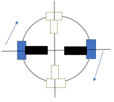
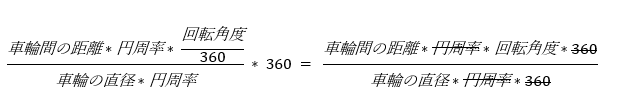

1 |
2 |
3 |
4 |
5 |
6 |
7 |
8 |
9 |
10 |
11 |
12 |
13 |
14 |
15 |
void left_spin(float degree){
float distance = 170 * 3.141592 * (degree/360);
float rotation = distance / (86*3.141592);
float angle = rotation * 360;
ev3_motor_reset(1);
while(ev3_motor_get_counts(1) < angle){
ev3_motor_set_power(1,30);
ev3_motor_set_power(2,30);
}
ev3_motor_stop(1,true);
ev3_motor_stop(2,true);
}
※左輪をBポート,右輪をCポートに取り付けたものを用いる
この関数は、左スピンをさせる関数で、スピン角度を大まかなに指定できる。

3~5行目の式では、マシンをスピンさせたい角度(degree)をモーターを回す角度(angle)に変換している。
距離 = 車軸を直径とした円の円周 × スピン角度が一回転の何割か
= 車輪間の距離 × 円周率 × スピン角度の割合
= (170) * 3.141592 * (degree / 360)
= distance
回転数 = 距離 ÷ 車輪の円周 = 距離 ÷ (車輪の直径 × 円周率)
= distance / ((86)*3.14159265)
= rotation
モーター角度 = 回転数 × 360
= rotation * 360
= angle
※この値は計算上の数値であって、摩擦や重心、慣性などによるずれが考えられるため、angleを調整する必要がある。
※上の式を簡単にすると angle = 車輪間の距離 / 車輪の直径 * degree となる。
